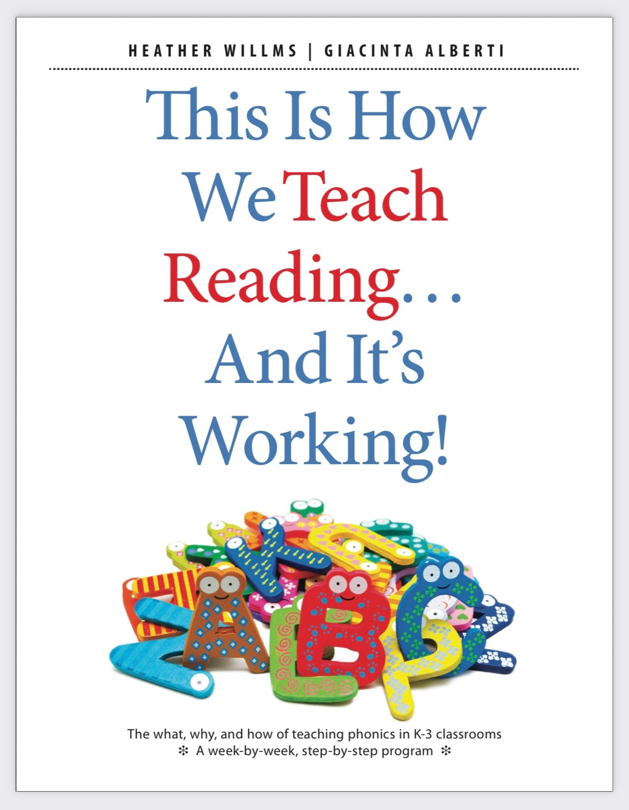

This timely book offers a clear and structured method of integrating explicit phonics instruction into K—3 classrooms. It is an essential guide for teaching reading, that is grounded in the evidence—based science of reading.
It provides a flexible and effective step—by—step progression that covers essential phonics skills that teachers have been asking for, and addresses the needs of busy, diverse classrooms. This blueprint addresses screening, assessment,
and intervention, as well as working with English language learners. Tools for implementation include high-impact activities, lesson templates, word lists, phoneme—grapheme grids, word ladders, and more.